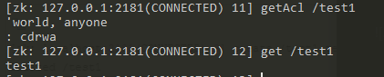
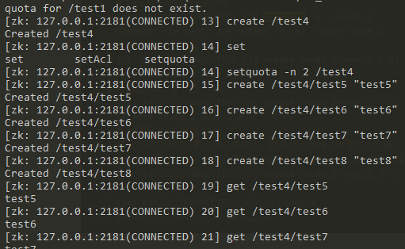
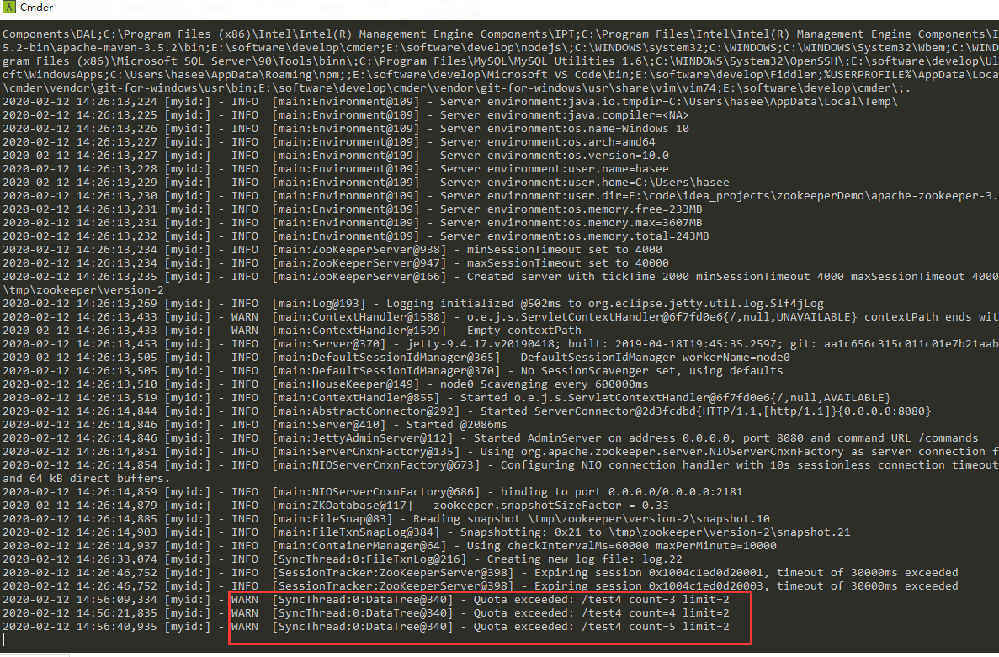
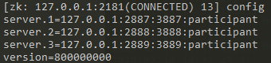

看看 zookeeper 有哪些用法吧，共勉。
help
可以列出 zookeeper 的用法
addauth scheme auth
添加认证用户
scheme 可选值：
- word 表示所有。创建节点的默认权限。有唯一的id是anyone授权的时候的模式为 world:anyone:rwadc 表示所有人都对这个节点有rwadc的权限。这里用的是id而不是expression
- ip 使用 IP 地址认证
- auth 不需要id。不过这里应该用expression来表示。即(scheme:expression:perm)
- host 使用用户主机名作为访问控制列表的id。但是这里需要注意的是表达式用的是主机名的后缀即可。举个例子。如果表达式设置为 corp.com可以匹配如host1.corp.com, host2.corp.com的主机名，但是不能匹配 host1.zookeeper.com这个主机名。
- digest 使用用户名:密码编码成md5的方式来作为访问控制列表的id。但是这里id不作为授权语句的一部分，这里也是用expression的方式。用户名: 密码先进行sha1编码后再用base64编码。这个比较恶心，后面再详细介绍。
示例：
1 | addauth digest liuwen:123456 |
setAcl [-s] [-v version] [-R] path acl
为节点设置权限
| 权限 | ACL简写 | 描述 |
|---|---|---|
| CREATE | c | 可以创建子节点 |
| DELETE | d | 可以删除子节点（仅下一级节点） |
| READ | r | 可以读取节点数据及显示子节点列表 |
| WRITE | w | 可以设置节点数据 |
| ADMIN | a | 可以设置节点访问控制列表权限 |
示例：
1.auth
1 | create /test0 "test0" |
这是为 addauth 添加的 liuwen 账号 对 节点 /test0 的一个 w 权限（即写权限），楼主无意中发现，如果不是 create 此节点的 client，是不能 对此节点设置权限的，报错如下：
没有权限是不能访问的
上述示例中，如果在新的客户端 addauth liuwen，是可以对 /test0 赋值的，因为 liuwen 有 test0 的 write 权限
2.world
1 | create /test1 "test1" |
任意 client 都可以随意访问

getAcl [-s] path
获取节点acl信息
get [-s] [-w] path
获取一个节点的 value
看起来 zookeeper 是有持久化的，我关闭 server 和 clients 之后，依然可以访问到之前创建的 node
close
关闭连接，会关闭当前 client ，但是不会影响其他 client
delete [-v version] path
删除 node，没有 acl 权限的 client 也可以删除相应节点
注：如果一个节点下有子节点，使用delete是不行的，需要使用deleteall
deleteall path
删除此节点及此节点下的子节点
注：path必须是一个完整的节点path
setquota -n|-b val path
- -n 表示自身节点+子节点的最大个数
- -b 表示数据值的最大长度
- val 子节点最大个数或数据值的最大长度
- path 节点路径
-n 设置自身节点+子节点的最大个数

注：比较坑的一点是，虽然可以设置子节点的最大个数，但是超过此个数create也是成功的！！！自身也算最大节点数中的一个
超过个数限制的话，server端会出现警告信息

-b 设置节点值的最大数值（单位 byte）
设置的byte value也可以小于当前节点长度
重新set节点value byte长度如果大于设置值，server 也会看到相应的 warn 信息
注：如果使用setquota，-n、-b是被锁定的，如果切换设置会提示，org.apache.commons.cli.AlreadySelectedException: The option ‘b’ was specified but an option from this group has already been selected: ‘n’，org.apache.commons.cli.AlreadySelectedException: The option ‘n’ was specified but an option from this group has already been selected: ‘b’，重新create的节点也会被锁定quota，需要关闭当前client，重新启动一个client，诡异？or坑爹？
delquota [-n|-b] path
移除节点数量、长度限制
注：delete 节点的时候，是不是把 节点 的 quota 删除的

listquota path
显示节点的 quota 信息
注：Output quota 表示子节点 quota 信息，Output stat 表示当前节点 quota 信息，Output stat 里面的 bytes = （当前节点bytes+子节点bytes），-1表示没有限制
history
查看历史命令
ls [-s] [-w] [-R] path
- -s 状态
- -w 添加监听
- -R 节点及其子节点
注：如果一个client a在一个节点添加了watcher监听，那么针对此节点增删子节点的改动将被监听到1次，但是别的client b对此节点做的改动，client a监听不到，超过一次，client a也监听不到，困惑，难道是为了节约资源，让程序员自己去控制监听？？？
ls2 path [watch]
被 ls 取代
printwatches on|off
是否打印 watcher 信息，默认值是 on
quit
关闭连接并且退出
redo cmdno
重新执行 command no 序列的命令
removewatches path [-c|-d|-a] [-l]
移除节点的 watcher
[-c|-d|-a] [-l] 代表什么意思，暂时没有搞懂，居然找不到官方 docs，这项目凉了吗？
rmr
被 deleteall 取代了
但是节点及其子节点也能被实实在在地删除，真是坑的一匹啊
set [-s] [-v version] path data
设置节点值
stat [-w] path
可以查看到 节点属性，并为之添加一个一次性 watcher
sync path
手动同步节点值
个人感觉在 zookeeper 集群运转正常的情况下，不需要使用这条语句
config [-c] [-w] [-s]
查看当前集zk server配置
- -c 仅输出与当前配置相对应的版本和客户端连接字符串
- -w 用于在znode上设置watcher
- -s 用于显示znode的统计信息

reconfig [-s] [-v version] [[-file path] | [-members serverID=host:port1:port2;port3[,…]]] | [-add serverId=host:port1:port2;port3[,…]] [-remove serverId[,…]*]
添加/删除/修改新机器到zookeeper集群
暂时没搞懂
参考资料： ZooKeeper ACL权限控制 Zookeeper权限管理之坑 zookeeper-04-基本命令 Zookeeper笔记之quota Zookeeper源语（客户端命令）集合（3.5.6） Zookeeper 客户端 zkCLI 命令详解 Zookeeper docs